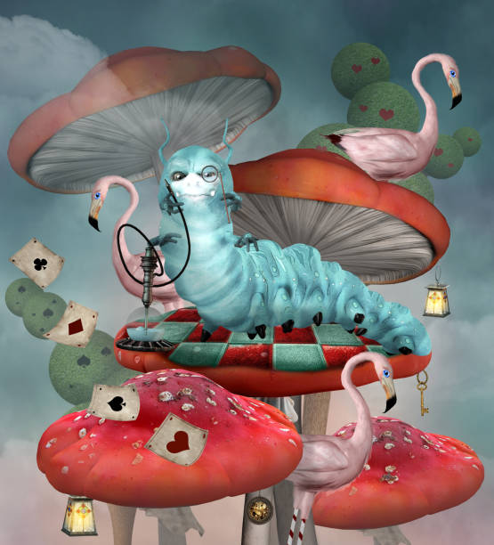
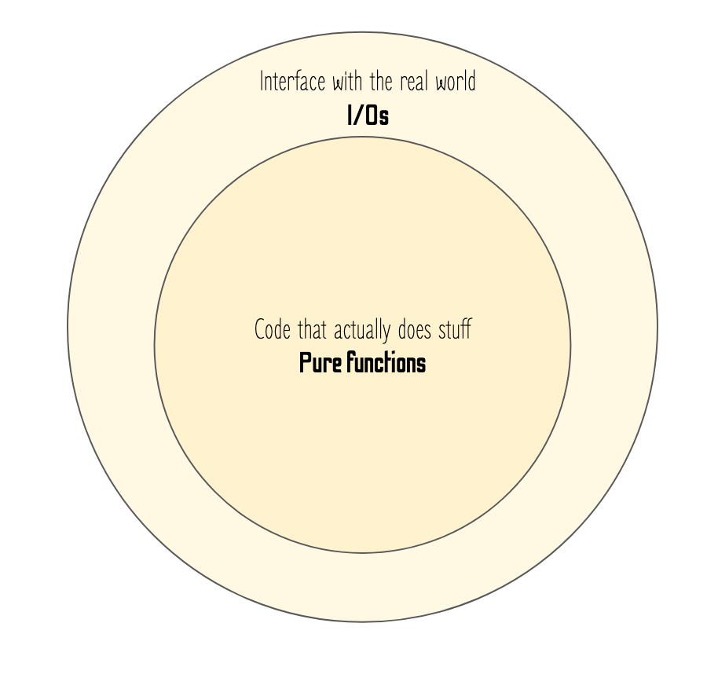
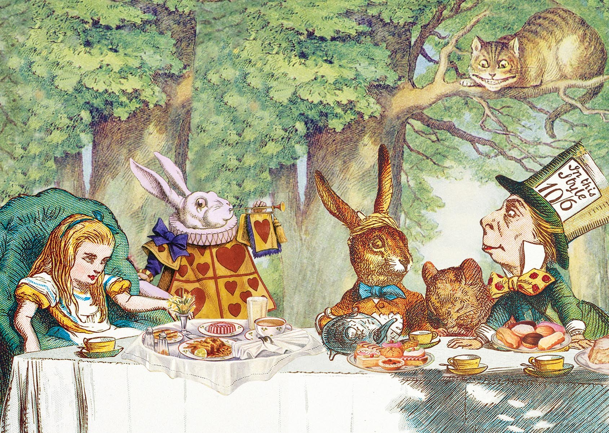

Off with their I/Os!
Best architecture practices to contain I/Os
About me
- Lead data scientist at

- I push ML models in prod
 @SdgJlbl
@SdgJlbl
Disclaimer
This talk is very loosely inspired by Alice's adventures in Wonderland
Into the rabbit hole
Pure functions versus side-effects

Pure functions
- Output depends only on the inputs
- Easy to unit test
- Great for parallelising
- NO side effect
All I/Os are side-effects!!!
How can we have both the advantages of using a functional coding style, and still do actual stuff?
Onion architecture
Onion architecture
Here the madness begins

def a(a **kw):
print(a, kw)